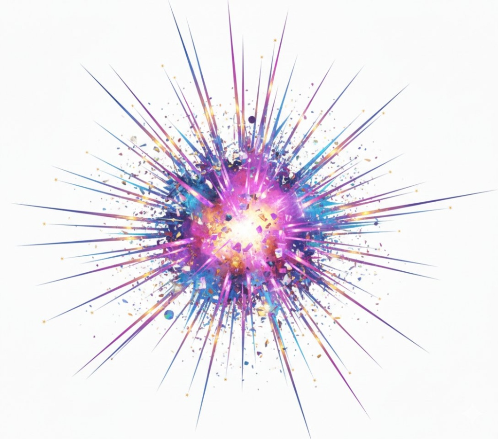

Med mere end 20 års erfaring med LEAN procesoptimering, innovation og digital transformation har vi valgt at dedikere os til at få danske virksomheder til at få succes med AI.
With more than 20 years of experience in LEAN process optimization, innovation and digital transformation, we have chosen to dedicate ourselves to helping Danish companies succeed with AI.
Den industrielle æra lærte os at optimere maskiner. Den digitale æra kræver, at vi transcenderer det helt.
The industrial era taught us to optimise machinery. The digital era demands we transcend it entirely.
De fleste organisationer bruger millioner på at optimere legacy administrative processer. Vi hjælper dig med at identificere, hvilke processer der kan elimineres helt gennem intelligent automatisering og arkitektonisk tænkning.
Most organisations spend millions optimising legacy administrative processes. We help you identify which processes can be eliminated entirely through intelligent automation and architectural thinking.
Sand transformation handler ikke om at digitalisere individuelle trin—det handler om at gentænke hele værdistrømme. Vi arkitekturer løsninger, der fjerner overleveringer, eliminerer dataindtastning og skaber sømløse digitale flows.
True transformation isn't about digitising individual steps—it's about reimagining entire value streams. We architect solutions that remove handoffs, eliminate data entry, and create seamless digital flows.
Vi bringer industriel engineerings stringens til moderne teknologis fleksibilitet. Lean-principper møder cloud-native arkitekturer og skaber systemer, der er både effektive og adaptive.
We bring the rigour of industrial engineering to the flexibility of modern technology. Lean principles meet cloud-native architectures, creating systems that are both efficient and adaptive.
Mød holdet bag transformationen.
Meet the team behind the transformation.
Teknologi
Technology
Banebrydende teknologiske løsninger, der eliminerer manuelle processer og skaber skalerbare systemer.
Cutting-edge technological solutions that eliminate manual processes and create scalable systems.
Lean Mindset
Lean Mindset
Fokus på værdiskabelse og eliminering af spild i alle led af organisationen.
Focus on value creation and waste elimination in every layer of the organisation.
Facilitering
Facilitation
Effektiv ledelse af forandringsprocesser, workshops og organisatorisk transformation.
Effective management of change processes, workshops, and organisational transformation.
Lean Operation
Lean Operation
Optimering af daglige operationer for maksimal effektivitet og minimalt spild.
Optimisation of daily operations for maximum efficiency and minimum waste.